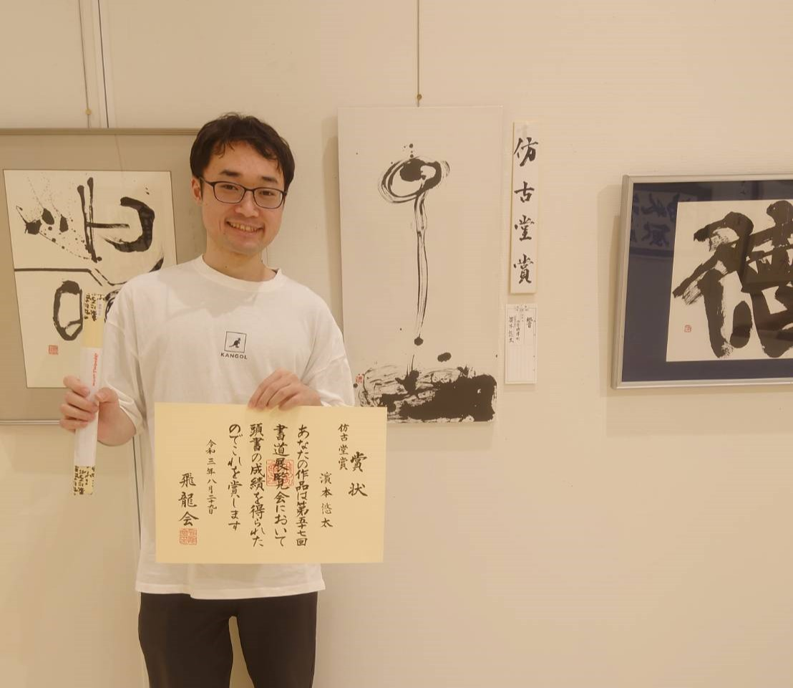

ガクチカ
敬語翻訳アプリ
- ハッカソンに参加して入力した文章を敬語に翻訳するアプリを開発しました。
チーム全員がpythonもAI開発も初心者で苦労しました。
リーダーとして発表までやりきる事ができました。
- 小学生のプログラミングサポート
- 長与小学校のプログラミングサポートにボランティアで行きました
Windowsタブレットを用い、レゴEV3を操作する授業でした
期待した通りに動かすことができると子供達が大喜びしていました
- 水の流れで音が鳴るシステム
- 教授から元ゼミ生の卒論をもらってScrachからpythonコードに書き換えました
録音や他の音色を出せるように改良しました
色んな容器で子供達が喜ぶようなシステムにしようと計画しています。
- 書道で特別章をもらいました

- 飛竜書道展覧会で2年連続特別章を頂きました
毎年県内の大人子供合わせて1000人以上が出展します
週に一回教室に通って書に励んでいます
- 扇精光ソリューションズでアルバイト

- 教授のご紹介により夏休みの期間中IT企業でバイトをしました
プログラミングではなく、テストをする下流工程のアルバイトでした。
エクセルを再勉強し、当初は6時間かかっていたテスト項目を1時間で終わらせられるようになりました。
- 看護学科の先生からのシステム開発依頼
- 看護学生の技術記録ノートをデジタル化してほしいという依頼をもらいました
現在、240名の看護学生が記録した200項目以上ある技術記録を集計してグラフ化しています
看護学科の先生とイメージの共有を図りながら開発を進めています。
- 青少年のための科学の祭典

- 教授の出展サポートに行きました
2日間とも1000以上の来客がありました
教授の作品で子供達が楽しそうに遊んでいる姿を見てユーザーを笑顔にできる作品を作りたいと感じました
- Benesseハッカソン
- 2dayのハッカソンに参加し、現役社員さんから頂ける『ベネッセ賞』を受賞しました
架空のペルソナを高いビジョンで想像する課題発見能力が身につきました
チームで一つの事に取り組み、協力しあいながら何かを作ることの面白さを再実感しました